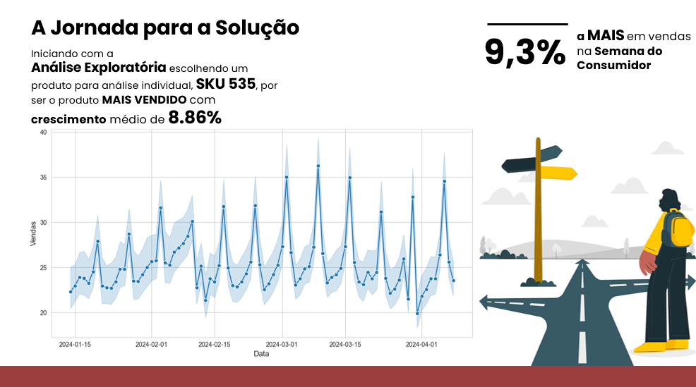
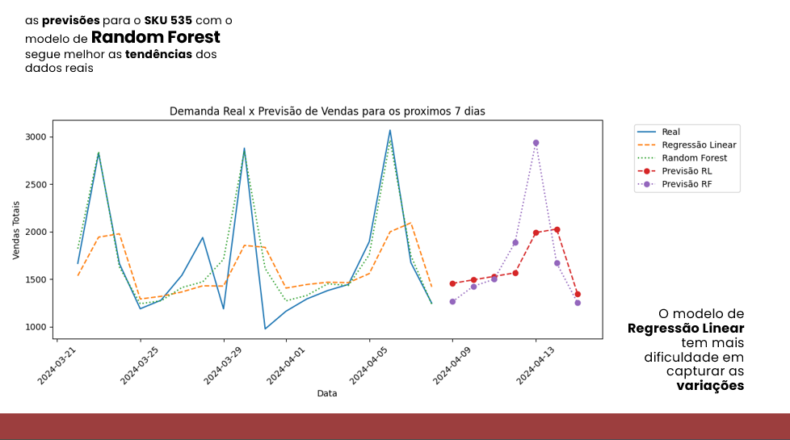

Projetos em Destaque
Previsão de Demanda no Varejo
Utilizei séries temporais e regressão para prever vendas por SKU. Aplicado em decisões de estoque e fabricação.
 Classificação de Documentos PDF
NLP com SpaCy e Transformers para identificar macrotemas e descritores em votos e despachos administrativos.
Automação de Crawlers e ETL
Desenvolvi bots Python para extrair dados de PDFs, APIs e banco Oracle, integrando com dashboards e relatórios.
Segmentação e Churn de Clientes
Modelos de clusterização e classificação com K-Means e Random Forest para retenção e ações de marketing.